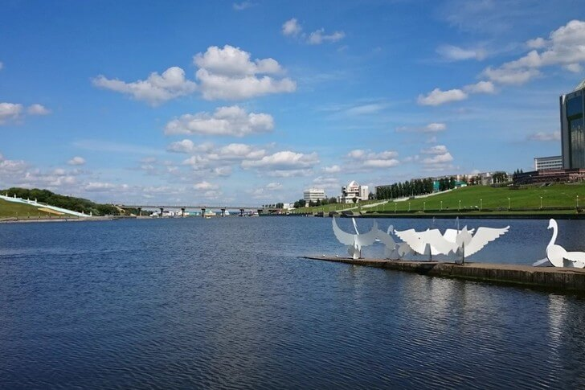

Достопримечательности города Чебоксары
Монумент Матери
Памятник стоит на центральной площади на холме, доминируя над всей окружающей застройкой. Он был установлен в 2003 году по инициативе главы Чувашии Н. В. Федорова. Скульптура воплощает образ матери, благословляющей и оберегающей своих детей. Вместе с внушительным постаментом в высоту она достигает 46 метров. Монумент считается символом Чебоксар и всей Чувашской республики.
Чебоксарский залив
Искусственный залив в историческом центре города, созданный на месте впадения реки Чебоксарки в Волгу. Благодаря удачному месторасположению, со временем он превратился в культурно-рекреационную зону, где местные жители с удовольствием проводят время. В период праздников на набережных проходят различные мероприятия, на выходных люди выбираются сюда прогуляться, поплавать на лодках и поужинать в ресторанах.
